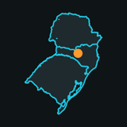

Política de Privacidade
Atualizada em 29 de outubro de 2026
Esta política explica como o app Sul em Numeros pipeline, a ferramenta interna do canal de YouTube Sul em Números, usa os dados que recebe das APIs do Google.
Quem usa o app
O app é usado só por quem produz o canal Sul em Números, no computador dessa pessoa. Ele não tem cadastro, não é oferecido ao público e não acessa a conta do Google de nenhuma outra pessoa.
O que o app acessa
Com a permissão dada na tela de login do Google, o app acessa somente o canal Sul em Números no YouTube, para:
- Enviar vídeos (permissão youtube.upload): sobe os vídeos do canal como privados.
- Gerenciar o canal (permissão youtube.force-ssl): confirma qual canal está conectado, envia legendas, capas e a arte do canal, e lê o estado e as estatísticas dos vídeos do próprio canal.
O app não lê e-mails, contatos, arquivos, histórico ou qualquer outro dado da conta do Google.
Onde os dados ficam
A autorização do Google (o token de acesso) e as informações dos vídeos do canal ficam guardadas apenas no computador de quem produz o canal, em arquivos protegidos. Nada é enviado para servidores do Sul em Números ou de terceiros.
Compartilhamento
Os dados recebidos das APIs do Google não são vendidos, compartilhados nem usados para publicidade. Eles servem só para publicar e acompanhar os vídeos do próprio canal.
O uso e a transferência para qualquer outro app de informações recebidas das APIs do Google seguem a Política de Dados do Usuário dos Serviços de API do Google, incluindo os requisitos de Uso Limitado.
YouTube e Google
O app usa os Serviços de API do YouTube. Ao usá-lo, valem também os Termos de Serviço do YouTube e a Política de Privacidade do Google.
Como tirar o acesso
O acesso pode ser retirado a qualquer momento nas configurações de segurança da Conta do Google, ou apagando o token guardado no computador. Depois disso, o app não consegue mais acessar o canal.
Contato
Dúvidas sobre esta política podem ser enviadas pelo e-mail de suporte que aparece na tela de permissão do Google ou pela página do canal @sulemnumeros no YouTube.